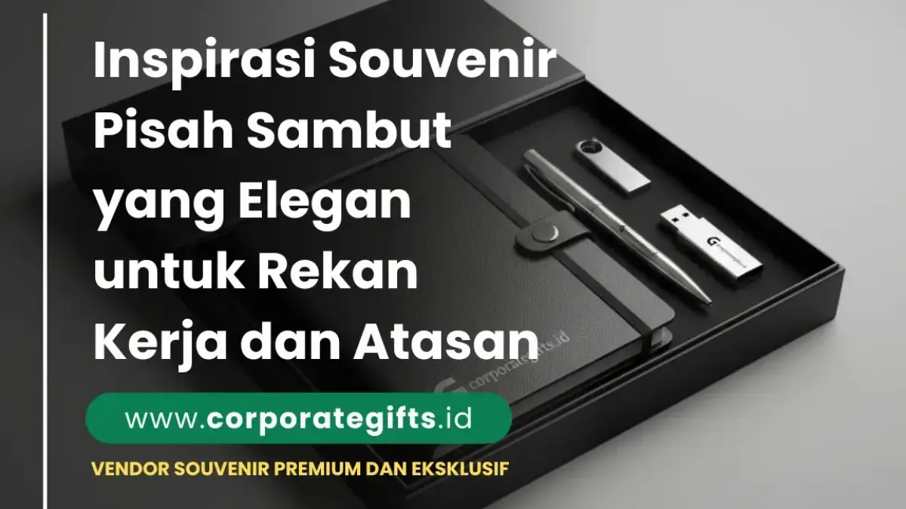

Corporate Gifts ID - Momen pisah sambut rekan kerja, mutasi divisi, serah terima jabatan (sertijab), hingga pelepasan masa purna tugas (pensiun) adalah peristiwa sarat makna yang membutuhkan cenderamata berkelas. Souvenir pisah sambut berfungsi sebagai simbol apresiasi tertinggi atas dedikasi dan kerja sama yang telah terjalin. Pilihan populer untuk rekan kerja mencakup notebook kulit custom grafir nama, tumbler stainless steel insulasi ganda, serta tas organizer kulit, sedangkan untuk level atasan dan direksi lebih mengedepankan plakat kristal presisi atau gift set eksekutif dalam kemasan hardbox mewah.
Di lingkungan korporat, hadiah perpisahan yang dirancang dengan apik bukan sekadar barang fisik, melainkan jembatan relasi profesional yang akan terus berlanjut di masa depan.
Poin Kunci Pemilihan Souvenir Pisah Sambut:
- Simbol Apresiasi Dedikasi: Bentuk penghormatan tulus atas kontribusi dan jejak rekam kerja positif karyawan selama mengabdi di perusahaan.
- Personalisasi Nama Eksklusif: Penerapan grafir laser nama penerima atau kutipan personal untuk memperkuat nilai sentimental.
- Diferensiasi Level Jabatan: Menyesuaikan antara hadiah fungsional harian untuk rekan sejawat dan cenderamata formal bergengsi untuk atasan.
- Kemasan Hardbox Berkelas: Boks magnetik eksklusif dengan aksen pita atau bantalan busa beludru yang langsung memberi kesan mewah.
Mengapa Souvenir Pisah Sambut Krusial bagi Budaya Perusahaan?
Tradisi memberikan cenderamata pada momen pisah sambut membawa implikasi positif yang luas bagi organisasi:
- Membangun Budaya Apresiasi (Employee Recognition): Karyawan lain yang menyaksikan pelepasan rekan kerjanya merasa termotivasi karena melihat bahwa loyalitas dan prestasi dihargai secara layak oleh manajemen.
- Menjaga Jaringan Profesional (Alumni Networking): Rekan kerja yang berpindah ke instansi baru berpotensi menjadi mitra bisnis strategis atau klien potensial di masa depan.
- Memperkuat Employer Branding: Penghormatan yang hangat dan profesional mencerminkan budaya perusahaan yang sehat dan manusiawi di mata publik.
Rekomendasi Souvenir Pisah Sambut untuk Rekan Kerja & Sejawat
Untuk rekan kerja satu tim, cenderamata yang paling ideal memadukan kepraktisan fungsi harian dengan estetika profesional:
1. Notebook Kulit Custom Grafir
Buku agenda bersampul kulit sintetis (PU leather) dengan grafir laser nama rekan kerja dan logo perusahaan menjadi pilihan abadi. Sangat berguna untuk mencatat agenda penting di lingkungan kantor baru.
2. Tumbler Stainless Steel Vakum SUS 304
Tumbler custom insulasi ganda dengan sentuhan doff/matte mampu menjaga suhu minuman panas atau dingin hingga 12 jam. Hadiah ini mendorong gaya hidup sehat dan ramah lingkungan.
3. Pouch & Tech Organizer Kulit
Tas pouch multifungsi untuk menyimpan mouse, kabel charger, flashdisk, dan alat tulis kerja. Memberikan kesan rapi dan profesional bagi rekan yang sering berpindah ruang rapat atau mobilitas tinggi.
4. Pena Metal Rollerball Eksklusif
Pena logam berbobot mantap dengan ukiran inisial nama penerima pada bagian bodi menjadi simbol prestise tanda tangan dokumen penting.

Cenderamata pisah sambut kantor eksklusif: perpaduan plakat kristal presisi dan set alat tulis premium untuk pimpinan instansi.
Pilihan Cenderamata Eksklusif untuk Level Atasan & Pimpinan
Ketika atasan, manajer, atau direktur mengalami rotasi maupun purna tugas, cenderamata yang diberikan harus mencerminkan rasa hormat yang mendalam:
- Plakat Kristal Grafir 3D: Plakat kaca kristal optik dengan ukiran laser 3D interior yang memuat pesan terima kasih, masa bakti, dan logo korporat. Tampil sangat elegan dipajang di ruang kerja baru.
- Executive Desk Gift Set: Kotak hardbox beludru berisi kombinasi pulpen metal bertinta Jerman, tempat kartu nama kulit, dan gantungan kunci grafir logo institusi.
- Jam Meja Kayu Multifungsi: Jam meja kayu mahoni atau jati dengan ukiran plat kuningan keemasan yang menggabungkan pen holder dan stasiun pengisi daya nirkabel (wireless charging station).
Panduan Memilih Souvenir Berdasarkan Jenis Acara Pisah Sambut
Setiap konteks acara pelepasan memiliki nuansa emosional yang berbeda:
- Serah Terima Jabatan & Promosi: Fokuskan pada hadiah yang menyuntikkan semangat kepemimpinan baru, seperti pena tanda tangan VIP dan tas dokumen kulit.
- Masa Purna Tugas (Pensiun): Tonjolkan elemen nostalgia dan penghargaan masa pengabdian panjang, seperti scrapbook kenangan tim, piagam plakat kayu jati, atau lukisan karikatur berbingkai emas.
- Mutasi Antardepartemen: Pilih cenderamata yang ringan dan penuh kebersamaan tim, misalnya tumbler custom berfoto siluet divisi atau mug keramik berlogo divisi.
Tabel Komparasi Ide Souvenir Pisah Sambut Berdasarkan Kategori & Budget
Berikut rangkuman rekomendasi paket souvenir pisah sambut untuk mempermudah perencanaan anggaran divisi Anda:
| Kategori Penerima | Rekomendasi Item Utama | Teknik Personalisasi | Jenis Kemasan | Estimasi Budget |
|---|---|---|---|---|
| Rekan Kerja / Sejawat | Notebook Kulit + Pen Metal + Tumbler SUS 304 | Laser Grafir Nama & Logo | Softbox Custom / Pouch Serut | Rp95.000 - Rp220.000 |
| Atasan / Manajer / Direktur | Plakat Kristal Optik + Executive Pen Set + Card Holder | Grafir 3D Laser & Hot Print Emas | Rigid Hardbox Beludru Magnetik | Rp350.000 - Rp950.000+ |
| Purna Tugas / Pensiun | Piagam Plakat Kayu Jati Kuningan + Album Kenangan | Plat Kuningan Etsa & Emboss | Boks Kayu Eksklusif Bertutup Kaca | Rp400.000 - Rp1.200.000 |
| Pisah Sambut Divisi | Tumbler Grafir + Tas Pouch Organizer Kanvas | Sablon Presisi / UV Print HD | Eco Paper Box Berpita | Rp65.000 - Rp140.000 |
Sedang merencanakan acara pisah sambut di kantor Anda? Konsultasikan pilihan produk, katalog ready stock, dan simulasi penawaran harga melalui katalog souvenir kantor kami atau ajukan permintaan penawaran resmi (RFQ) langsung ke tim CorporateGifts.ID.